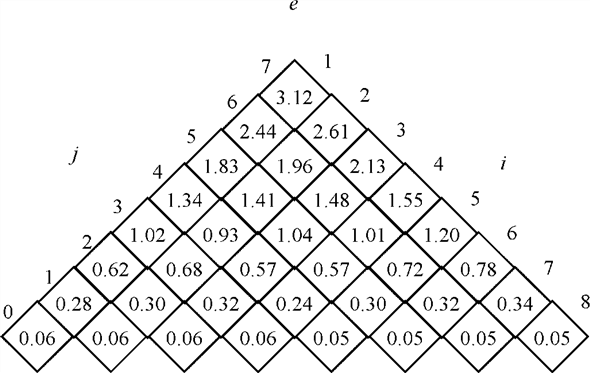
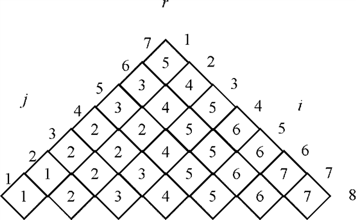

As MATRIX-CHAIN-ORDER procedure, OPTIMAL-BST algorithm computes and returns two tables e and root. Table root is useful to print the structure of optimal binary search tree. Thus, using root, an algorithm like PRINT-OPTIMAL-PARENS, can be developed to print the structure of the optimal binary search tree.
Consider the following pseudo code that construct the structure of the optimal binary search tree
CONSTRUCT-OPTIMAL-BST(root, i, j)
//if i equal to 1 and j equal to n, then print the root
1. if i = = 1 and j = =root.rows
//printing the root which is at [1, n] in the root
2. print kroot [1, j] is the root
//if i is greater than j return
3. if (i > j)
4. return;
// copy the value at [i,j] to x
5. x = root [i, j]
6. if i != x
7. print kroot [i,x-1] is the left child of kx
8. else
9. print dx-1 is the left child of kx
// call recursively on the left child
10. CONSTRUCT-OPTIMAL-BST (root, i, x-1)
11. if j != x
12. print k root [x+1, j] is the right child of kx
13. else
14. Print dx is the right child of kx
//calling print function on right child
15. CONSTRUCT-OPTIMAL-BST (root, x+1, j)
16. return;
Explanation of algorithm:
• For the above algorithm CONSTRUCT-OPTIMAL-BST (root, 1, n) is the initial call. Where n is the number of keys. The root node is printed in the initial call only
• The input table, root contains equal number of rows and columns. Thus whenever, i is greater than j, the algorithm simply returns back at line 4.
• Otherwise, the algorithm prints left subtree nodes until i does not equal to x.
• In the line 5, the value of root at [i,j] is stored into x.
• If the i is equal to x, then the algorithm prints left dummy nodes, in the line 9.
• After the left sub tree nodes are printed, the algorithm recursively called to print right sub tree nodes. The algorithm prints right subtree nodes until j does not equal to x.
• If the j is equal to x, then the algorithm prints right dummy nodes, in the line 14.
• The time complexity of the above algorithm is  because
there are n nodes and thus the algorithm called n
times recursively.
because
there are n nodes and thus the algorithm called n
times recursively.
Creating the Optimal Binary Search Tree
The straight forward way to find the Optimal Binary Search Tree is to try different trees created by using the given keys. Calculate the search cost of each tree and try to find out the least of them. The one with the least cost would be the optimal Binary Search Tree.
Consider the table given below:
|
i |
0 |
1 |
2 |
3 |
4 |
5 |
6 |
7 |
|
p i |
. |
0.04 |
0.06 |
0.08 |
0.02 |
0.10 |
0.12 |
0.14 |
|
q i |
0.06 |
0.06 |
0.06 |
0.06 |
0.05 |
0.05 |
0.05 |
0.05 |
The keys are denoted by i and pi and qi are the probabilities of success and failures respectively in finding a key in tree.
The cost for any node having the key in the tree can be calculated using the formula below:
Where c is the cost, d is the depth or height of the key node and p is the probability of occurrence.
Keeping this formula in mind the tree should be created in such a manner that the tree is not severely unbalanced and the keys with maximum probability are kept near the root. Based on these speculations some possible tress would be as below:The first tree in this case is the tree having k5 as the root. The expected values to be searched are located in the leaves of the tree.
Tree T 1 having k5 as the root
The second tree that can be used as the optimal binary search tree is shown below. This tree has k3 as root.
Tree T 2 having k3 as the root
One more tree that can be used as an optimal binary search tree is shown below. This tree has k3 as root and all other nodes subsequently.
Tree T 3 having k3 as the root
Now, the cost for each of the above tree has to be calculated: The table below shows the cost for each of the tree:
|
Key |
Probability |
T1 |
T2 |
T3 |
|||
|
Depth |
Cost |
Depth |
Cost |
Depth |
Cost |
||
|
k1 |
0.04 |
2 |
0.12 |
2 |
0.12 |
2 |
0.12 |
|
k2 |
0.06 |
1 |
0.12 |
1 |
0.12 |
1 |
0.12 |
|
k3 |
0.08 |
2 |
0.24 |
0 |
0.08 |
0 |
0.08 |
|
k4 |
0.02 |
3 |
0.08 |
3 |
0.08 |
3 |
0.08 |
|
k5 |
0.10 |
0 |
0.10 |
2 |
0.30 |
2 |
0.30 |
|
k6 |
0.12 |
2 |
0.36 |
1 |
0.24 |
3 |
0.48 |
|
k7 |
0.14 |
1 |
0.28 |
2 |
0.42 |
1 |
0.28 |
|
Total Cost |
1.30 |
1.36 |
1.46 |
The recursive solution using the dynamic programming for the same yields the following tables for search cost e, root table r, and the probability sum table w. The algorithm OPTIMAL-BST for creating the above said tables is given in the section 15.5 of the book.
For the purpose of convenience the table is aligned horizontally along the diagonal. The values for any e(i, j) and w(i, j) can be calculated using the formula given in the section 15.5 of the book as well. The values are computed as shown:
For example:
e(1,1) is calculated as below:
The cost table according to the OPTIMAL-BST algorithm is as below:
Suppose the value of i=1.The algorithm would execute as below:
The consequent values would be calculated using the algorithm and the table would be populated. The final yield of the algorithm would result the following table e and w.
The cost table shows the cost of searching the required key in different scenarios. A cell shows the cost of searching the key located at that intersection of row and the column.

The cost table e
The table above shows that the cost of searching the key would be 3.12 in the worst possible case.
The probability sum table according to the OPTIMAL-BST procedure is shown below. This table would be used in finding the root of the optimal binary tree.
The probability sum table w
The root table that is shown in the figure would show the different possible roots of the tree in various possible conditions.
Any specific value of the root would be calculated using the algorithm as below:
To understand, how the values are populated in root table, have a look at the remaining section of the algorithm for some sample values:
The root table for getting the optimal BST according to the OPTIMAL-BST is shown below:
Since
So

Root table r
The root table shows the root of the optimum tree would be the node 5 that means k5 should be the root of the tree for best performance in the worst case search. This way the optimal binary search tree for the previously discussed statistics can be created.
Consider OPTIMAL-BST and measure the effect on the asymptotic running time of the algorithm without making the table for but calculating the value ofdirectly from the equation:
An OPTIMAL-BST is a tree with internal nodes as sorted keys and probabilityassociated with each data value to search in the tree. Because of this probability it is quite easy to compute the running time of optimal binary search tree.
Refer the page number 402 from textbook for OPTIMAL-BST algorithm. In that algorithm we prepare three tables. The table named e for storing expected cost of searching a node, table w for sum of probabilities of each key and root for containg roots of the sub tree containing keys.
Now if we do not maintain a table, we add up the values of in the line of OPTIMAL-BST algorithm by using the equation:
There is a tradeoff between space and time complexity, and less space will be required if we do not maintain a table but will subsequently increase the running time complexity.
We would run loop for iterations. The code will have three nested loops now, each with a constant work done.
Each loop adds n time complexity and hence, the required
time to run the algorithm that is the complexity is .
.
Hence in OPTIMAL-BST if we do not maintain the tablebut still calculating the value of then the algorithm will take less space but the time required to run will be increased.
Modifying OPTIMAL-BST procedure
The Optimal-BST is a procedure that is used to create a Binary Search tree of the given key values. This procedure yields the optimal tree structure that can be formed to make the search cost minimum.
In order to modify the Optimal-BST procedure to run in ,
characterize the optimal substructure of Optimal Binary Search
Trees is needed.
,
characterize the optimal substructure of Optimal Binary Search
Trees is needed.
By considering any Sub-tree of Binary Search Tree that must contains the keys in contiguous range , for some .
A sub-tree that contains Keys must also have as it is leaves the dummy keys .
If an Optimal Binary Search Tree T has a sub-tree T’ containing Keys , then this sub-tree T’ must be optimal and also optimal for the sub-problem with keys and dummy keys .Consider the Optimal-BST whose nodes ranging from i+1 to j.
Adding an i node to T as i+1’s left child, and proper adjustment to dummy nodes makes also a legal BST .
When making the Optimal-BST ,
If
Then in should be placed at the ’s left sub-tree.
Since depth of i+1 with respect to in is similar to depth in.
The actual depth of i's, that is, with respective to's root, , is larger.
But, there is another optimal tree that is there with less increasing cost when inserting node i.
Thus, plus node i–1 can make a better tree, which contradicts's optimism.
Therefore, 
Similarly,
.
Thus, modified formula can be given as:
Then here to prove that the calculating of this formula, using
dynamic programming, takes time:
Thus a call to the group of states  is there
which has fixed the
level-k group (obviously nodes will
be there in the group).
is there
which has fixed the
level-k group (obviously nodes will
be there in the group).
The calculation of takes
iterations;
Thus, for all level-k group states, their calculations take iterations in all.
Since,
,
The number of iterations becomes .
The value of k varies from 0 to n–1 making it a total
of n iterations. So, the complexity of each of the separate
iterations would be. When one
of them is nested inside another one, the complexities of them
would be multiplied according to the Master’s theorem.
.
The value of k varies from 0 to n–1 making it a total
of n iterations. So, the complexity of each of the separate
iterations would be. When one
of them is nested inside another one, the complexities of them
would be multiplied according to the Master’s theorem.
Thus, the combined complexity is
Therefore, this is the appropriate procedure to run the
Optimal-BST in time.